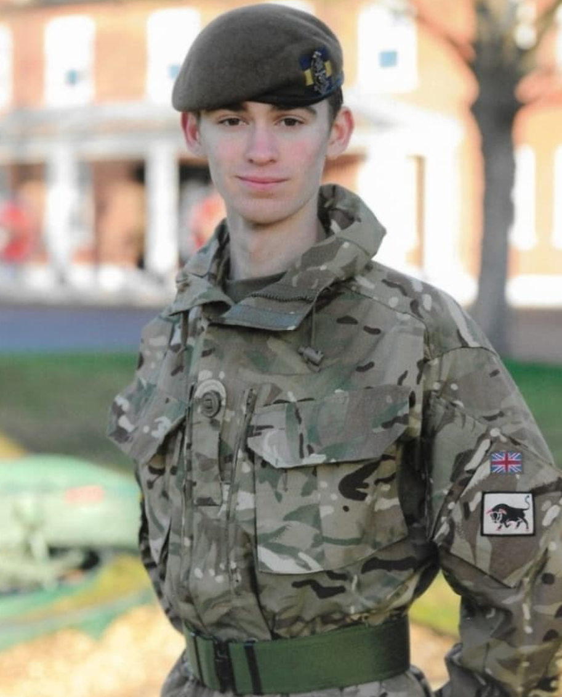
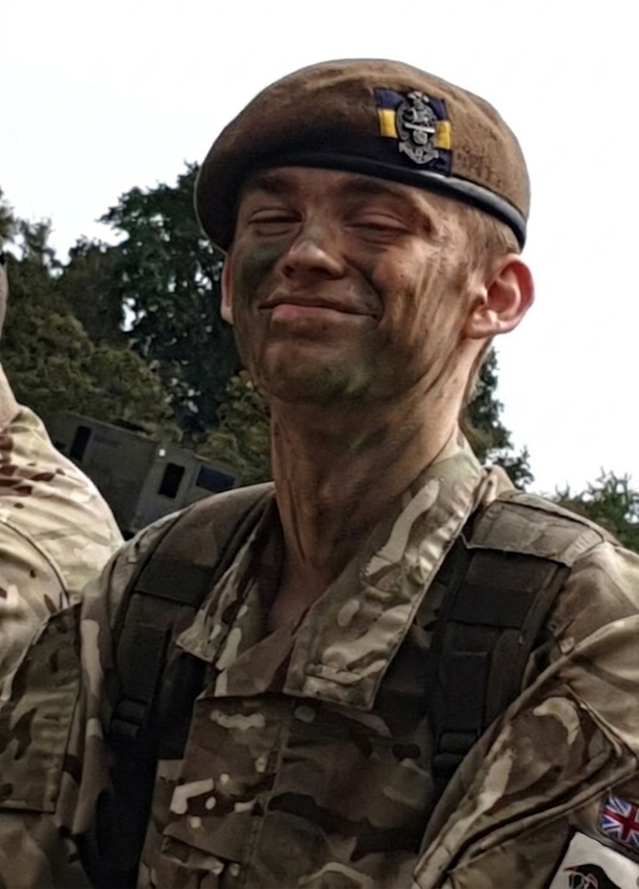
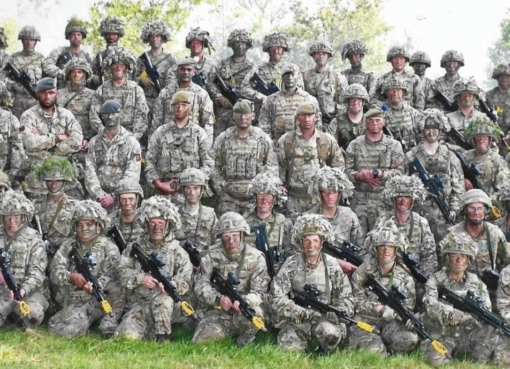
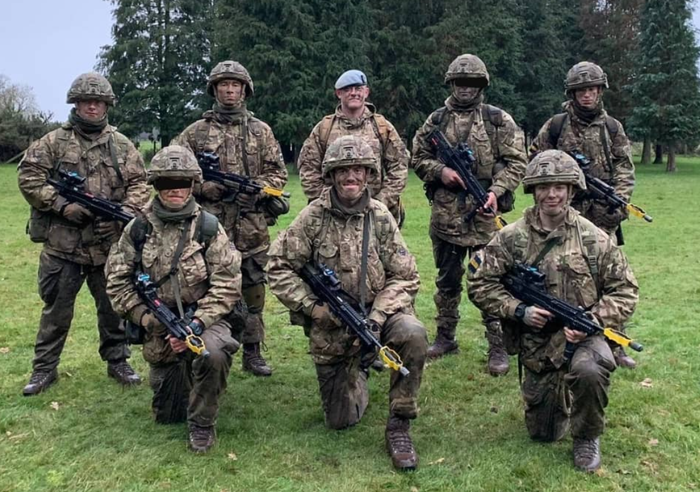
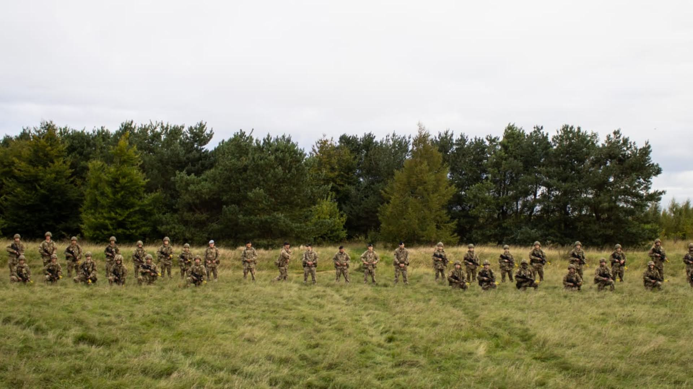

British Army (2019–2022)
At the age of 18, I joined the British Army Reserve and trained part-time throughout my undergraduate degree. I joined the local unit, 3rd Battalion Princess of Wales’s Royal Regiment, B (Royal Sussex) Company. I passed soldier selection in 2019, which was a two-day process consisting of a 2 km run, strength tests, obstacle courses, teamwork tasks, maths and literacy tests, and an interview.
I attended the Army Officer Selection Board in Westbury at the beginning of 2020 and passed the briefing stage. This was a two-day selection involving planning exercises, cognitive tests, interviews, bleep tests, obstacle courses, and team exercises. I decided to take more time before pursuing the officer route further in order to better understand the role of a soldier.
I attended battalion weekend training exercises in preparation for my basic training. My basic training was conducted at ATR Grantham during the winter. Over this period, I was trained and tested across a range of skills including map and compass use, CBRN (chemical, biological, radiological, and nuclear) warfare, rifle and fieldcraft, and combat medical drills, as well as a range of fitness tests. Our field exercise lasted three days, during which we lived under bashas in snow and mud.
I often volunteered as section 2IC (second in command) or duty bod.


I continued training with my unit for several months before being sent on my Phase 2 Combat Infantryman’s Course at ITC Catterick. This course was more focused on combat and fieldcraft. I was tested physically and mentally, carrying 40 kg rucksacks (bergens) over long distances and living in the field for four days. Each night, my section conducted night patrols using head-mounted night vision, leading to significant sleep deprivation. We learned platoon-level attacks, CASEVAC procedures (carrying a casualty in a stretcher with full kit over several kilometres under fire), and night ambushes.
I passed the Combat Infantryman’s Course and returned to my unit for further training. On weekends, I was deployed to various training exercises across the UK. I spent time in a Javelin platoon before being moved back into a rifle platoon. I often volunteered for reconnaissance roles during exercises, as I was confident navigating behind enemy lines and producing sketches of terrain to pass back to command.


My unit placed a strong emphasis on urban operations, so we regularly conducted blank-firing exercises in urban environments, including shopping centres. During field exercises, I often volunteered as 2IC, where my responsibilities included maintaining inventory checks of soldiers in the section, conducting welfare checks, and leading a fireteam in combat situations.
